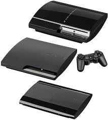

Release in 2000 by Sony, the PlayStation 2 became the best-selling console of that and in time overall. Reaching over
160 million units worldwide. One reason being that it came with DVD playback, turning it into both of a gaming console and
a entertainment system. Talking about the games, the PS2 had a wide and diverse amount of games, one that comes up is Grand Theft Auto:
San Andreas, Resident Evil 4, Tony Hawk's Pro Skater 3, and more. It even came with backwards compatibility, which means that
it can play games with its older brother, the PlayStation 1, which is made it even more popular. Even after the PlayStation 3s release in 2006,
it remained in production and received new games until 2013 and same with manufacturing. Overall, the PS2 made a big difference in mainstream culture.
Xbox
The Xbox by Microsoft, launched in 2001 and was the first console by Microsoft. It had powerful hardware and a built-in hard drive, which were
uncommon at the time. It's biggest innovation was Xbox Live, released in 2002, which allowed players to compete and communicate online, which would be important
later on in future consoles, The games for the Xbox had also a wide amount of games, like it's standout title, Halo: Combat Evolved, became a cultural for Xbox
and established Xbox as a competitor to Sony and Nintendo. While it did sell less than the PS2 (24 million united worldwide by May 2006), it did lay out the foundation for
future consoles to come.
PlayStation 3 and Xbox 360
PlayStation 3
Launched in 2006, Sony's PlayStation 3 had things like HD graphics and Blue-ray disc technology, offering games and movies
in HD on the console. Although it faced a rough start due to its high price, it eventually built a strong
reputation thanks to the exclusive titles it has like Uncharted 2, The Last of Us and God of War III. This PlayStation introduced
PlayStation Network, allowing players or everyone to download games and connect onlne much like Xbox Live, making it one of the consoles
that lead the future consoles into a digital world. Compared to the PS2, the PS3 sold around 87 million units worldwide, becoming the eighth
best-selling console of all time. There are three versions of the PS3, The fat or original, the slim and super slim, each losing features of the original like
both not able to have backwards compatibility with ps2 games and the super slim having a slide open disc tray
on the top for discs.

Xbox 360
Released in 2005, Microsoft's Xbox 360 became one of the most influential consoles of its generation. Early on
the console suffered from a high failure rate, named the Red Ring of Death, with Microsoft releasing
new design models for the consoles: the Xbox 360 S in 2010, and the Xbox 360 E in 2013. Besides that
It expanded Xbox Live, offering multiplayer gaming, downloadable games, and had media apps. The 360 also
introduced new features like achievements and gamer profiles, which then became standered accros the industry. The major
exclusives of the Xbox 360, like Halo 3, Gears of War 3, and Forza Motorsport 3, the console shaped gaming communities and made
mutiplayer a central part of console gaming.
Nintendo Wii and Wii U
The Nintendo Wii
Compared to Microsoft and Sony's approach to consoles, Nintendo took a completely different approach with
the wii, released in 2006. Instead of having powerful graphics like the competitors, Nintendo focused on motion controls
that encouraged players to move and interact with the games physically. That gained a more broader audience for thw Wii.
Games like Wii Sports and Mario Kart Wii became a staple for the Nintendo Wii, with the console selling over 100 million units.
Early models were backwards compatible with GameCube games and accessories and later on, removed the backwards compatibility with later models
and with the Nintendo Wii mini.
The Nintendo Wii U
The Wii U, released in 2012, aimed to expand the idea from the original wii with its gamepad controller, which featured a touchscreen for second-screen
gameplay. Compared to the Wii, it was considered a commercial failure, with around 13 million units world wide. Due to it having a week lineup of games, limited
third-party support and bad marketing. But it laid the groundwork for the Nintendo Switch. So the Wii U's focus on hybraod feacitres marked a transition toward modern games
later on.